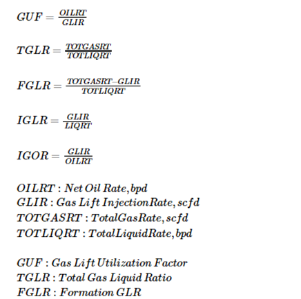

3 \(DSP^2E\) - The Well Network Dataset (part 3)
3.1 Scanning well datasets
In our last post (Part 2) we reviewed the multiwell dataset generated by scanning multiple well models built with the software Prosper. This time we will analyze a network model built with GAP - the well network analysis tool from Petroleum Experts -, using well models that have been previously calibrated and matched.
- [ ]
share the multiwell dataset in Github - [ ]
create an email and user name for Oil Gains account in Github\ - [ ]
Or later, we promise to provide the links?
Typically, these network models are analyzed by viewing the results graphically and in the built-in solver table or exporting the text data to continue the comparative analysis with any office application. This represents a little of an inconvenience because: (1) the results cannot be compared to other scenarios unless you take manual notes; (2) no graphical analysis can be directly performed because the application lacks plotting capabilities for the solver output; (3) the data that we need exported is not structured or tidy, -meaning, lacks columnar format or something resembling tables or data frames. This requires time of the engineer for parsing and format the solution table from GAP to be understood by Excel or other analysis application; (4) lastly, the solutions are not saved in a historical file for future reference; the solutions from the solver are lost on time.
In some way we have to deal with it. We cannot expect from sophisticated state-of-the-art calculation engines to be full of features to satisfy the data scientist in our production engineering department. We understand we are in a transition to an era of big data. We will get there soon. We expect that petroleum engineering software will catch up with the times. In the meantime, we can handle our data analysis with Python, R or other data science visualization tools available.
The objective of this article is sharing an experience on applying data science to the results coming out of network modeling work on a set of oil wells. These oil wells are combination of flowing and gas lift wells; mostly gas lift wells. We are looking to optimize the production schema of the system by finding the right tubing head pressure, gas lift injection rate, gas lift injection pressure, choke size, separator pressure and others.
3.2 The Network Model
As we mentioned above, the export format of the calculation results of network modeling for well optimization is non-structured text but still it can be printed or pasted directly to Excel for parsing to separate the data in columns (variables) and rows (observations). In some way, this is time consuming and a potential source of errors. Worse if several iterations have to be performed on the well and network input data for the generation of optimization scenarios. Certainly, this process is screaming to be automated. But that takes time and resources.
3.3 The need of automation for well network modeling
This is what this is about: generating a repeatable and automated script to read the network model from the original source or calculation engine: GAP. GAP is a comprehensive application from Petroleum Experts to resolve well networks. It is unique in the sense that counts with a very powerful interface for data interchange with other applications; it is called OpenServer.
With OpenServer it is possible to read and write variables from and to the network model. Also allows the production engineer to customize production optimization scenarios in the most complex fashion making possible an automated process by means of iterative input to find a solution that better adapts to the conditions of our field. In this article we dedicate our attention to the GAP Solver that looks like Figure 1. It corresponds to a generic example.
 ] Figure 1 - GAP solver panel from one of the examples.
] Figure 1 - GAP solver panel from one of the examples.
3.4 The network model dataset
The well network dataset is formed essentially by the columns in the solver. In the figure above you see on the first column various items that are part of the network such as flowlines, separators, joints, etc., but we are looking for is only the wells. Of course, you can analyze other network components but that could be a topic of a different article. Each of the columns in the table can be extracted, as we explained above, by copy-pasting to Excel, or by using OpenServer. We read each of the columns (the ones that we are most interested in) and create a dataset. We will explain later how this reading process works (involves Python and OpenServer).
- [ ]
show obfuscated datase/table/dataframe
The rows in the dataset correspond to the wells and the columns to the variables that were extracted from the columns in the solver.
Instinctively, we may tempted to say, after seeing the solver table, that the dataset should be just the calculated columns in that table. But that would be an incomplete dataset. Besides of the solution for the scenario proposed, we require additional data for the network of wells under analysis.
-[ ] what is the additional data?
3.5 Reading the model variables with automation
Reading the GAP model requires a connection to OpenServer through a COM server. There are few examples under the OpenServer folder in the IPM examples installation folder that uses Excel VBA. For simple examples, Excel is fine. For serious programming and more complex tasks it is recommended to use Python or other high level language.
We show below a pseudo-code explaining the steps for reading GAP variables. Writing to GAP is similar.
- [ ]
explain the GAP variable - [ ]
show few examples of the variables: GAP.well[0].bla-bla-bla - [ ]
show a basic code to read the variables to a dataframe. Pseudo-code
# pseudo-code for GAP automation script with Python
from ptech import *
connect_to_openserver()
start_gap()
select_network_model()
open_network_model()
wells = NetworkModel(wells)
data = list()
for well in wells:
data.append(read_variables(well))
create_dataframe(data)
shutdown_gap()
close_openserver()3.6 Gathering auxiliary data
Collecting the data for the network model is not a major problem; most of the data is coming from the well models that we saw in Part 2. At this stage, the well models have been matched to their IPR (inflow performance relationship), VLP**(vertical lift performance) and calibrated against their latest well test and FGS (flowing gradient surveys).
Additional data for the network model such as constraints, wells on-line, choke orifice size, flowline dimensions, separator pressures, total field production are entered directly in the model in GAP.
what else?
3.7 The field view
During the construction of the network model, conditions change: wells that are on-line, wells shut-in, compressors down, flowlines opened or close or bypassed, changes in the chokes, back-pressure, etc. When we run the network optimization we are looking for a way to visualize in one plot the current status as is in the model file in GAP. This saves considerable time in navigating through screens and checking the well condition one by one.
What we see in Figure 2 is a customized plot that was written using matplotlib, a Python plotting library. The variables shown are the minimal that could be shown as critical for the verification of the model.

Figure 2 - The well network summary plot.
Each of the rectangles represent a platform. The wells in green are the ones active or producing. The well with suffix NF, GP and GL mean that that well is a natural flow well or it is a gas producer or it is a gas lift well. At the bottom of the rectangles we see the total number of strings (or wells). The letter “E” below means the number of wells that are enabled in the model, while “D” indicates how many wells were disabled in the network model.
- [ ] change the plot above to something neutral
3.8 The KPIs dataset for Gas Lift
Since most of the wells in the dataset were producing with gas lift, In order to find relationships between the different gas lift parameters we build an additional dataset based on common gas lift formulas in Figure 3 to evaluate the gas lift performance of the field. The new dataset uses as a base for the calculations the columns available in the solver dataset.

Figure 3: Key Performance Indicators (KPIs) for gas lift
The reason for doing this is to observe the gas lift indicators under the light of the solutions recommended by the network optimizer. We try to find out if there is a better scenario that just maximizing the oil production, such as reallocating gas or give preference to wells with a lower watercut.
This is how the gas lift KPIs dataset looks after applying the formulas.

Figure 4 - a dataset generated from the solver solution.
- [ ] obfuscate data.
Note that we have kept the well name as a column to identify the row or observation.
3.9 Other datasets
- [ ] mention what are the other datasets that will be published
3.10 Basic statistics


3.11 Advanced statistics


3.12 Conclusions
- There is always a way to get an engineering solution to be statistically analyzed.
- Use plots to visualize a summary of the data.
- Don’t be timid at generating additional datasets from the solution data.
- Look at what the plots tell you. They always will try to convey something.
- You are not wrong if you underestimate Excel as a potting tool. Look outside for better plotting tools but manage first how to get the data out.
- There is more gains to be made by analyzing your solution outside your favorite engineering software. There is no such thing as a software that does everything for everyone“.